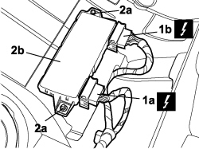

5505A48 CONTROL UNIT (DIGITAL NETWORK NODE) IN BOOT COMPARTMENT - R.R.
- Path
- Procedures > 55 ELECTRICAL EQUIPMENT > 5505 INSTRUMENT/GAUGE ELECTRICAL CIRCUITS > 5505A MULTI-FUNCTION COMPONENTS > 5505A48 CONTROL UNIT (DIGITAL NETWORK NODE) IN BOOT COMPARTMENT - R.R.
- Kind
- repair procedure (removal / refitting; the operation number is the code)
- Applies to
- all engines; all production periods
- Interactive page
- https://sloeber94.github.io/elrnDB-fCrm/en/#/194000679
Applies to: all engines; all production periods
Description | Connector | |
|---|---|---|
LUGGAGE COMPARTMENT CONTROL UNIT (NVB) |
Applies to: all engines; all production periods
 Removing
Removing
 Refitting
Refitting- Turn the ignition key to the OFF position.
- Disconnect the negative battery terminal.
Description | Connector | |
|---|---|---|
BATTERY |
Op. 7050A20 ONE-PIECE REAR SEAT CUSHION - R.R.
Op. 7050A33 REAR SEAT CUSHION SOUND DEADENING DEVICE/SPACER - R R
1. Release from the anchorage and disconnect both electrical connections (1a, 1b).
2. Undo the fixing nuts (2a) and remove the control unit (2b) from the vehicle.
Description | Connector | |
|---|---|---|
1a | LUGGAGE COMPARTMENT CONTROL UNIT (NVB) |
Description | Connector | |
|---|---|---|
1b | LUGGAGE COMPARTMENT CONTROL UNIT (NVB) |

Applies to: all engines; all production periods
Refitting
Removing- Check that the control unit is not damaged.
- Position the control unit on the vehicle and secure it using the two nuts.
- Connect the two electrical connections for the control unit.
Description | Connector | |
|---|---|---|
LUGGAGE COMPARTMENT CONTROL UNIT (NVB) |
To initialize the anti-crush safety system, proceed as follows:
- place the window in position at the lower end of travel position (manually or automatically);
- move the window in manual mode (without interruptions) to the upper end of its travel using the UP key.Once in this position, keep the UP control operated for at least 1 second.
After having initialized the system, the control unit (NVB) will allow both the automatic upwards movement of the window and the central opening/closing.
Op. 7050A33 REAR SEAT CUSHION SOUND DEADENING DEVICE/SPACER - R R
Op. 7050A20 ONE-PIECE REAR SEAT CUSHION - R.R.
- Connect the negative battery terminal.
Description | Connector | |
|---|---|---|
BATTERY |